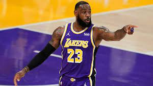
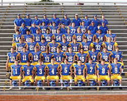

From Kobe Bryant to Jerry West there are many great players to put on the gold and purple. The best of which is Lebron James. With 4 NBA Championships, 4 NBA MVPS, 17 first team all NBA, and countless other achivements. Lebron James is the greatest player to play for the lakers. He isn't the greatest laker of all time but he is the greatest to ever play for them. The only player that is better in my mind is Micheal Jordan. He is the best basketball player ever. He never did play for the lakers though he spent most his time with the chicago bulls and finished his career with the Washington Wizards. Micheal Jordan played in the NBA for 13 seasons and won 6 NBA Championships along with 6 NBA MVPS. He also is one of only two gaurds to ever win a defensive player of the year award. Micheal Jordan is the best player to ever step foot on a basketball court. The 1996 bulls is arguably the best team to ever exist. This team set the wins record at the time going 72-10. This team was basically unstoppable with the best defensive and offensive raitings in the entire leauge.
| Player | Championships | MVPs |
|---|---|---|
| Lebron James | 4 | 4 |
| Micheal Jordan | 6 | 6 |
| Bill Russell | 11 | 5 |

Going into senoir year for football we had high expectaions. We had just come off a 8-1 season and 8 of 11 guys of the starting offense were returning. We had expectaions to win a state championships. To start the season off we had a scrimmage against Fenton High School. They were a decent team so we usually had a pretty good scrimmage every year with them. This year was not the case, they didn't move the ball at all. We would force turnover after turnover until they ended up calling it early. This set expectaions even higher. We knew we were good and now we just had to wait till playoffs to get started. After week four we were 1-3 and had to win the last 5 games to even have a chance at making the playoffs. It wasn't suppose to be this way. We had a good team with great players. We just were not playing as a team. I still remember the talk the following monday at practice. Coach said we have the talant to win but it's on us if we don't because we were not playing as a team. That week things changed. Qbs became full backs, tight ends became gaurds, people gave up what they wanted so the team could have success. Players finally put themselves aside and put the team on top. We ended up winning those last 5 games and making it all the way to the state championship.